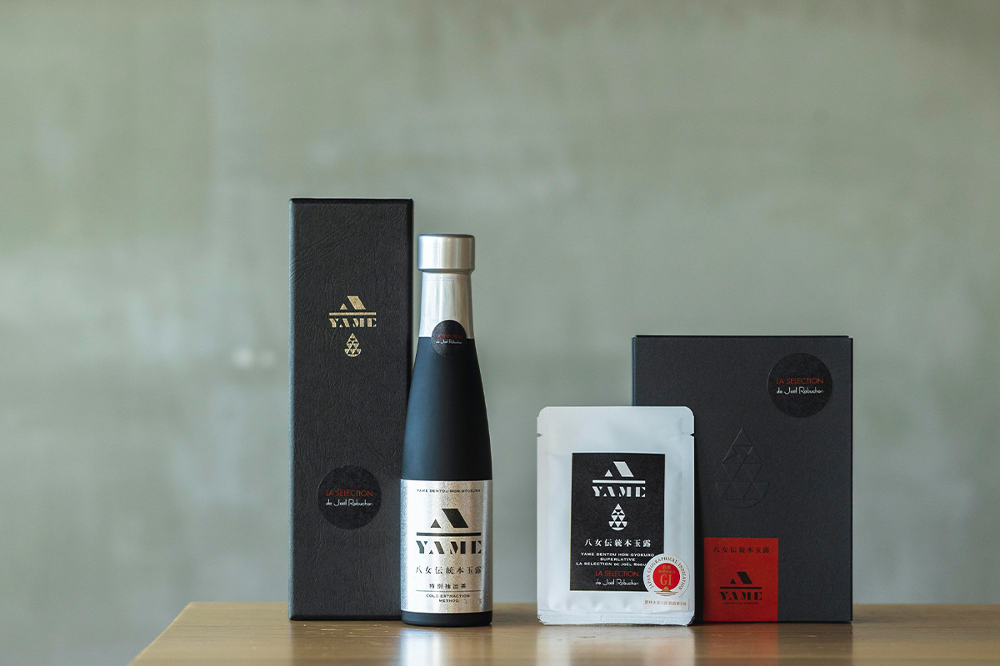
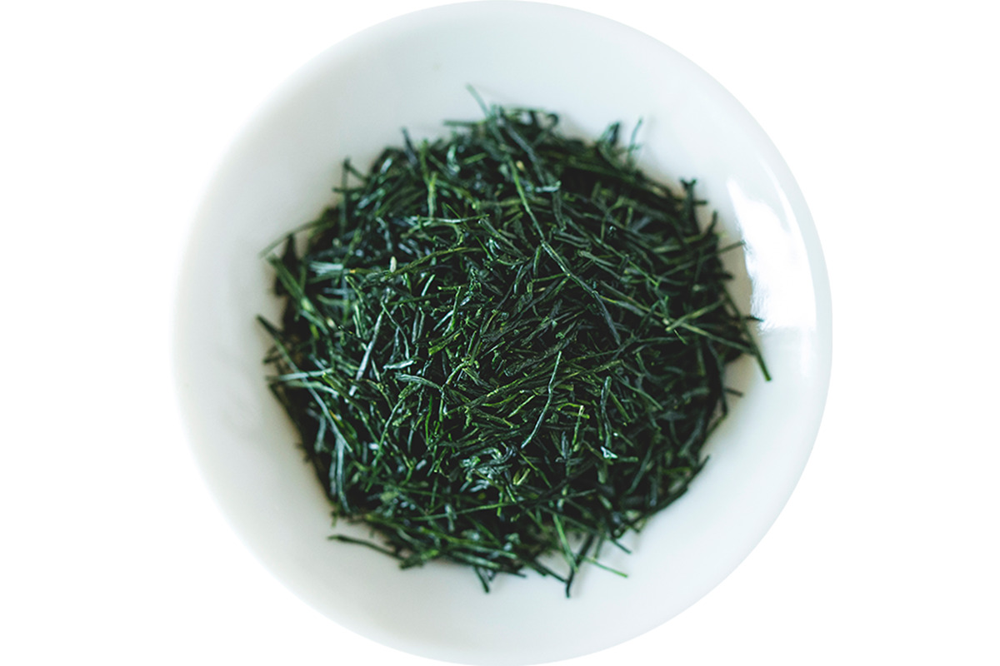
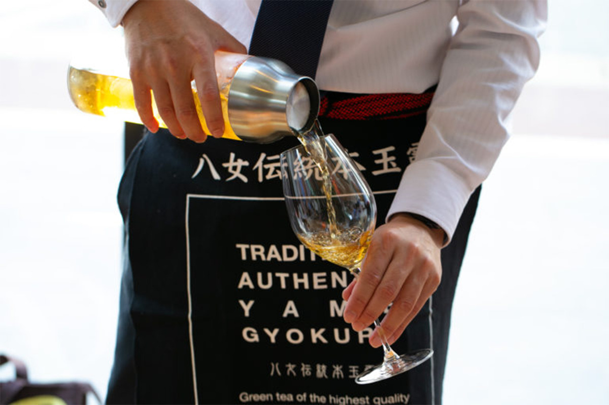
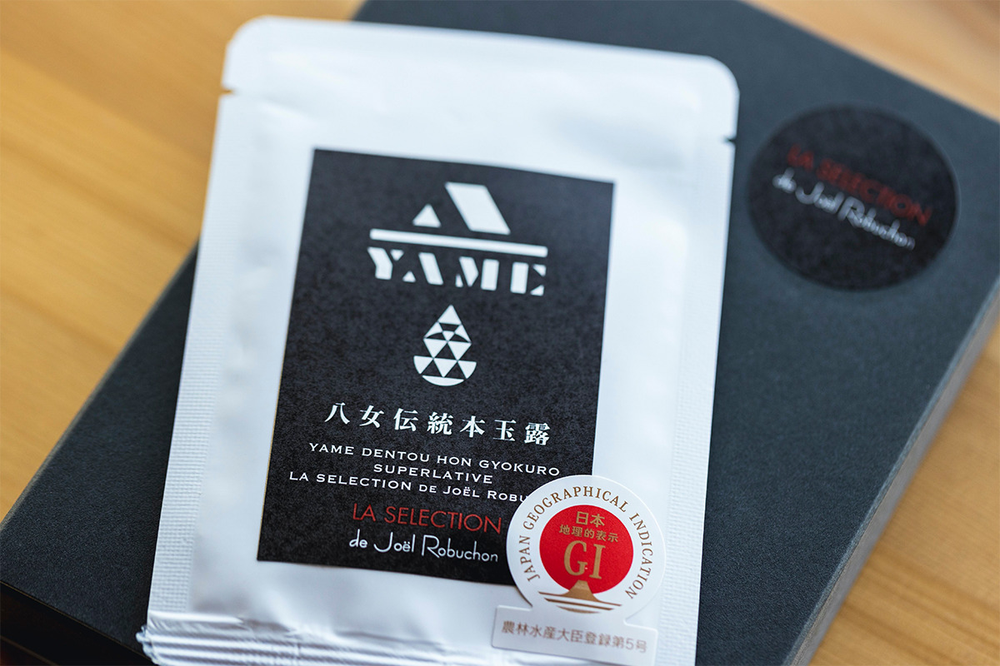
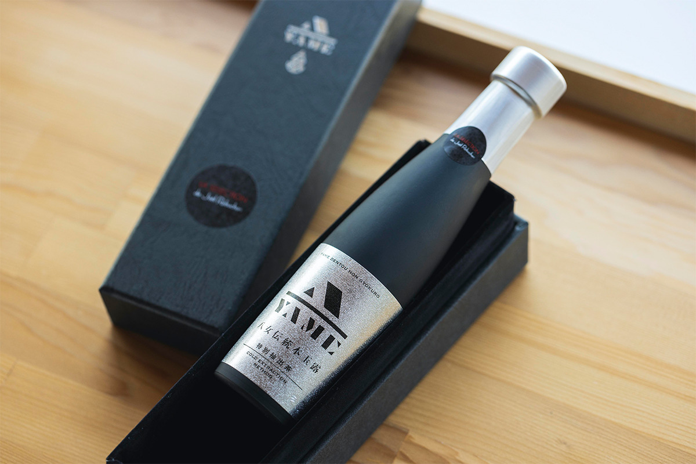
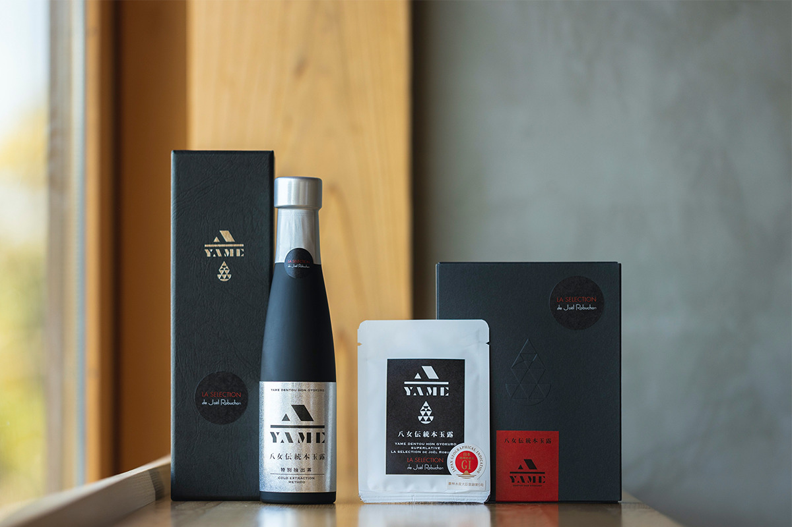

Префектура Фукуока · Ямэ · чай
Традиционный гёкуро Ямэ: чай из-под соломенных навесов, который собирают по два листа

Гёкуро считают самым дорогим и изысканным из японских зелёных чаёв. Среди всех гёкуро страны особое место занимает чай из Ямэ, небольшого чайного края на юге префектуры Фукуока, где его до сих пор растят и собирают по старым правилам.
Чай
Гёкуро из Ямэ
Ямэ лежит среди глубоких горных долин на юге префектуры Фукуока, и условия здесь будто созданы для земледелия. Самое ценное, что здесь делают, это традиционный гёкуро Ямэ.

Называть так можно не всякий гёкуро из этих мест. Для традиционного гёкуро Ямэ строго прописано всё: как выращивать кусты и как обрабатывать лист. Эти правила складывались около 150 лет, через пробы и ошибки нескольких поколений чаеводов. Результат виден по наградам: на Всеяпонском конкурсе чая в разделе гёкуро Ямэ получал приз лучшему чайному району страны двадцать лет подряд к 2021 году, а в 2025 году на 79-м конкурсе эта серия дошла до двадцати пяти лет.
Как растят
Соломенные навесы и два верхних листа
Главное отличие традиционного гёкуро Ямэ в ручной работе на каждом этапе. Ветвям чайных кустов дают расти естественно. Перед сбором плантацию закрывают от солнца навесами, сплетёнными из натуральной соломы. А собирают только самые верхние два листа на побеге, и только руками.
Поэтому такой чай и называют чаем, который может родиться лишь в Ямэ. Его советуют приберечь для особого дня и пить с теми, кто дорог.
Как пить
Гёкуро в бокале
Французский шеф Жоэль Робюшон, обладатель самого большого числа мишленовских звёзд в мире, в феврале 2018 года, за несколько месяцев до смерти, попробовал традиционный гёкуро Ямэ и высоко его оценил, после чего в его нью-йоркском ресторане L'Atelier de Joël Robuchon прошёл первый ужин в паре с японским чаем, а в 2021 году чай вышел под маркой LA SELECTION de Joël Robuchon.

Для этой серии чай отбирал руководитель по технологии чая Ямэ, тот самый человек, который когда-то выбирал, заваривал и подавал гёкуро французскому шефу. Чаеводы и чайные торговцы Ямэ помогли ему собрать листья в точности того же качества.
Листовой чай продают в пакете на 10 г, этого хватает примерно на пять чашек. В 2021 году такой пакет стоил 3850 иен с налогом. Бутилированный настой объёмом 180 мл стоил 14 300 иен с налогом. В год выпуска особое оформление получили всего 500 пакетов и 70 бутылок, и бутылки продавали только в официальном интернет-магазине.


Купить традиционный гёкуро Ямэ можно в официальном интернет-магазине.

Традиционный гёкуро Ямэ, интернет-магазин
- Цены / Вход
- листовой чай 10 г 3850 иен, бутилированный чай 180 мл 14 300 иен (с налогом)
- Сайт
- yame-teashop.com